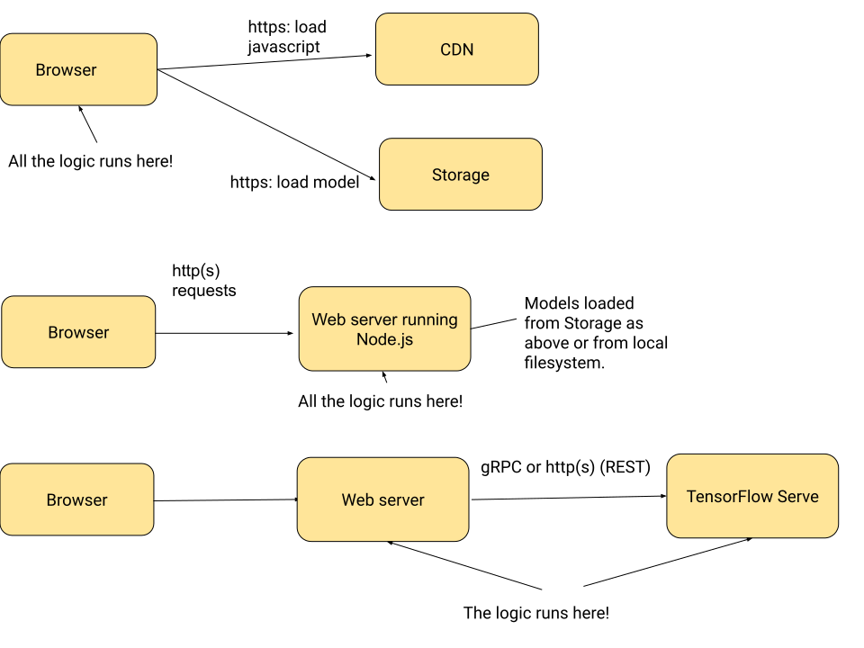

Serving Magenta
Magenta is an amazing collection of ml models, libraries and demos. I’m’ not a machine learning expert, but these things are fun to play with.
So of course I wanted to make my own apps with it. There’s a few things you
can do right away starting from the demos
— this is literally as easy as copy-pasting some javascript into a .html
file, making edits, and viewing it in your browser.
But how do you turn this into a proper web app? I’m really a backend person.
Even an actual web server, never mind one running Node.js, is somewhat
outside my comfort zone.
Based on a bit of reading around, I think there are basically three options:

- do all the work in client-side javascript
- use a Node.js-based server
- use any kind of web server and have it use TensorFlow Serving as a backend
The first and second options would be built using Magenta.js, which is a collection of TypeScript libraries for interacting with Magenta models. It’s based on TensorFlow.js.
The third option involves bringing up an instance of TensorFlow Serving, which is a C++ binary implementing both a gRPC and an HTTP API.
Everything in the client
Confusingly (for me, but I am not alone), Node.js can be used client-side. This is weird because Node.js is usually described as “JavaScript on the Server”. It can do things like import modules from files on the server’s filesystem, which is not possible client-side without additional trickery.
Nevertheless, here we are with the Magenta demos all running entirely in the browser. They achieve this by loading a script:
<script src="https://cdn.jsdelivr.net/npm/@magenta/music@1.4.2"></script>
This basically loads the entire magenta/music npm package.
They also load model checkpoints via https:
music_rnn = new mm.MusicRNN('https://storage.googleapis.com/magentadata/js/checkpoints/music_rnn/basic_rnn');
I’m a bit wary of loading scripts from external sources into my webpages. How can I trust the integrity of those servers, or of the data that they host? How good is their security? More mundanely, how much traffic can they handle and how long will the data be available? This is ok for prototyping, but not for a real web service.
As if to prove my point, I initially loaded version 1.0.0 instead of 1.4.2 of the magenta package and was missing a few modules. The scripts for magenta are being loaded from jsdelivr and I think I could have requested the latest version. It is also possible to build a comparable package using tools such as webpack or browserify and host it on one’s own web server for the client to retrieve.
If the security and availability concerns don’t convince you, there’s also a performance downside: this approach requires the client to download a big npm package and a model checkpoint when the webpage is loaded. There is a noticeable lag; absolutely fine for a demo, not fine otherwise.
Run the Node.js code on the server
Node.js was designed to run server-side, and this is what’s easy to do with the language. With the packaging/hosting solutions in the client-only approach above, I always felt like I was fighting against the system, trying to make it do things it was not designed for. While it’s fun sometimes to see how far you can push a thing outside its design boundaries, it is a lot of frustrating work, and leads to brittle system architectures. Just my opinion, but there you go.
I really wanted to run the core magenta code server-side. Create a node.js app, import (“require”) the magenta modules, load the models server-side, and serve requests. Note that while TensorFlow.js also has capabilities for training models, Magenta.js only implements inference requests. Training has to happen in python. That’s ok with me – the requirements for training vs. serving a model are very different and it would not even have occurred to me that one would want them to be performed by the same service until I saw this mentioned for TensorFlow.js.
Unfortunately, it is not currently possible to run the Magenta code server-side
because it loads a module called tone.js which tries to access the Audio Context
via the global window variable, and that only works client-side. The latest
version of the tone.js package apparently solves this but it has not been added
to Magenta yet – follow the open Issue to see why this isn’t
trivial to fix.
Use TensorFlow Serving
I think of TensorFlow Serving as the “real” way to serve an ML model in production. It’s a standalone server whose only job is to keep a model available for you to send inference requests to. This makes it feasible to perform things like model reloading without server downtime; you could even send a fraction of requests to a new model to test it. Those capabilities make me happy and confident in my service.
This architecture does add another box to our system diagram (we now have the model server separate from the web server), but I kind of like that because it means I can update the software on these pieces separately, and I can also scale them separately.
There is a downside though. TensorFlow Serving needs to be able to load your model, and there isn’t a straightforward way to do that with a magenta model. It looks like it’s feasible, just not simple.
Background: model loading and saving
On an abstract level, a machine learning model lets you do two things:
- you can train it, or
- you can ask it questions (‘inference’)
So for example, you can train a model to predict the next notes in a sequence by exposing it to a lot of music; then the inference request is where you give the model a few notes and ask it to generate the next ones. Since training takes time and a significant amount of resources, you’ll want to re-use your model, so you need to save it after training.
When you save a model, you’ll typically save at least the weights and some information about the graph (mainly the sequence of layers and their dimensions).
Ideally, that information is enough to reconstruct the model for the purpose of inference requests. You may have custom code and additional parameters at training time, but it’s great when you can do inference with just the graph and weights data. Maybe a tiny bit more information is ok, so long as it’s easy to serialize.
TensorFlow Serving uses a serialization format called SavedModel to capture
information about
models. SavedModel is the default way you pass a model to TensorFlow Serving; it’s
a protocol buffer holding primarily checkpoints (these are the weights) and graph
information. Magenta does not use SavedModel; they have their own format for
saving model information (Magenta bundles), but you cannot translate those into
SavedModels because Magenta’s models do not implement the Trackable
interface.
Thus in order to serve a Magenta model you always have to load the class implementing the model, and then initialize it using the weights and graph information from the bundle. It is still technically possible to serve such models from TensorFlow Serving by implementing a custom Servable for them. Servable is an interface for things that TensorFlow Serving can serve. Note “technically”: Magenta models have implementations in JavaScript and in Python, but TensorFlow Serving needs them in C++, so there is more work to be done here. I checked the Magenta Issues but didn’t see anything about this, so it’s possible I misread, or that I just want to do something nobody else has yet cared enough to try.
I have not implemented this yet, so the TensorFlow Serving-related comments above are based only on reading documentation and code; I’ll tackle the practical side in a followup post.